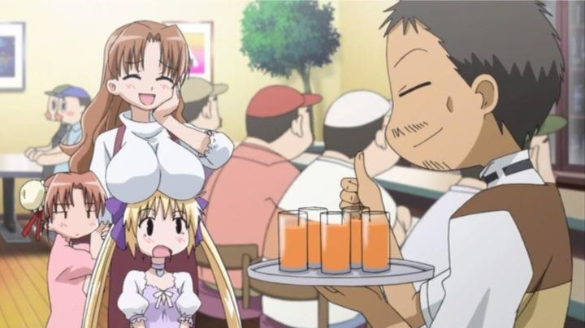

I should be a bit embarressed that I've spent even a moment of my time with the short OVA anime series "Indian Summer" (with a more expected Japanese title "Koharu Biyori"), let alone the time to review it here. Why do I even own a copy on DVD? There was a Black Friday sale for an American anime distributor, and I needed a little extra to get free shipping on my order. "Indian Summer" was $2, so I threw it in. This is how anime collections get out of hand.One positive aspect of this approach is that a viewer has the opportunity to go into a show completely blind, and has the opportunity to be suprised or impressed. I knew this show featured fan-service in some manner, but that was all. It's turns out this show has a light sci-fi element: it opens with a young man named Takaya Murase shopping in a boutique for robot companions, ultimately passing on more traditional "pet"-type female models for a model of a cute maid. The maid arrives in a box to his apartment, and soon receives the name "Yui" from her new master. Yui isn't really a cold, emotionless type of robot: she gets flustered and embarressed as much as any human girl, only occasionally recognizing limitations in her body and her reason for being. That shy personality doesn't adapt well with Takaya's personality: he's an otaku with a massive figure collection, and enjoys nothing more than to dress up Yui in a variety of hand-made costumes, ranging from cute and causal, to perverted. Actually, Takaya seems to enjoy Yui's shy side, but it's Yui who can't deal with the situation.Like most other anime of this type, the story plays out as one expects: despite Takaya's fetish, he has a heart of gold, winning over a series of female friends and ultimately Yui's love. This isn't the only anime with a story featuring love with a female robot maid, either. Being only three episodes long is both a blessing and a curse for the story: there are several elements that feel completely out of left field, like the monk sisters Ran and Sumire Midou that summon an octopus God at random times to rape one of the female characters (their existance has absolutely no context, as if they were placed in the wrong anime). Character development is almost non-existant. On the other hand, each episode is split into three smaller segments, making up about nine "mini" episodes, and they are able to cover about the same amount of story that a full series of this type would in a fraction of the time. This show might be a waste, but for only wasting 90 minutes instead of 300, I'm not as mad.Is the comedy or sexy-fanservice worth it to those who want it? The fanservice might best be described as "shameless," not quite outdoing other shows of the genre (or doing anything well), but at times going a little too far. The multiple "octopus" scenes, for example, are unnecessary. A reoccuring setting is a "cow"-themed cafe, where the female staff wear cow bells, the only full-time staff being the owner's daughter. Nudity isn't abundant, but in a few scenes, nipples are edited into the series in such a strange way that I can only imagine they were an afterthough after the episode was completed. There's also a strange segment where Yui has to take care of a baby boy for the afternoon: baby genitalia aren't unusual in Japanese cartoons, but we get a close-up shot of its' pee-pee, as Yui compares it to a baby elephant's trunk. It's bizarre, but more uncomfortable than funny. And the main premise is already plenty uncomfortable. Yui is effectively a slave, unable to run away from her master. She grows to like him, but is that really ok? Is it ok for Takaya to treat her like a dress-up doll when she has the personality of a human? When other girls around Takaya don't have any shame in wearing suggestive uniforms or cosplay... is that something we should expect as "normal," as if Yui is the odd one out? For that matter, male "otaku" are often rendered as generic fat big-lipped losers, so both sides of the coin ought to feel grossed out by the show.Visually, there are a few reaction shots that give a bit of personality, but otherwise the show is dull and generic, with limited animation and noticable consistency errors in between shots. Being released in 2007, I was certain it was older. The opening and ending themes are a bit annoying and of questionable subject matter. Without an English dub, the Japanese actors make the most of each character's personality to try to be charming, but the writing only offers so much for them to work with.The series ends with a credits scene of a montage of the show's scenes over a nostalgic Japanese song. A montage of scenes I had just watched an hour ago of octopus Gods and exposing maid costumes. This might best represent what "Indian Summer" is. It's utterly generic in the anime world, subpar in every sense, and too uncomfortable to enjoy even as a guilty pleasure.
- "Ani" More reviews can be found at : https://2danicritic.github.io/ Previous review: review_In_This_Corner_of_the_World Next review: review_Interspecies_Reviewers